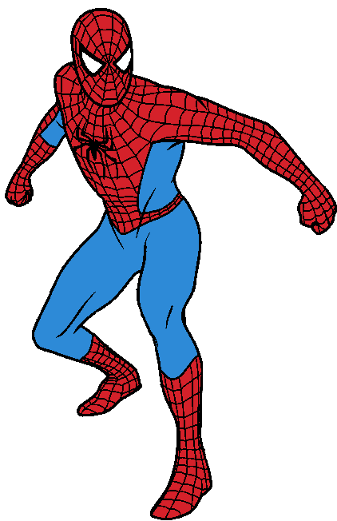

O Homem Aranha
O Homem-Aranha (Spider-Man no original em inglês) alter-ego de Peter Parker, é um personagem fictício, um super-herói que aparece nas revistas em quadrinhos (banda desenhada em Portugal) americanas publicadas pela Marvel Comics, existindo no seu universo partilhado. O Homem-Aranha foi criado pelo editor/escritor Stan Lee e pelo escritor/artista Steve Ditko, e a sua primeira aparição foi no livro de antologia Amazing Fantasy #15 (Agosto de 1962), durante a Era de Prata da banda desenhada. Lee e Ditko conceberam o personagem como um órfão, que foi educado e criado pela sua Tia May e o seu Tio Ben em Nova Iorque, e, enquanto adolescente, tem de lidar com as lutas diárias normais da sua idade, em adição àquelas que tem como combatente do crime mascarado. Para combater os seus inimigos, os criadores deram-lhe super força e agilidade, a habilidade de conseguir aderir na maior parte das superfícies, a possibilidade de disparar teias de aranha através de mecanismos montados nos pulsos (inventados por ele próprio, a que ele chama "lança-teia" - "web-shooters") e consegue reagir precognitivamente ao perigo com o seu "sentido-aranha" ("spider-sense"). Os seus poderes foram adquiridos após ter sido mordido por uma aranha radioativa.

Quando o Homem-Aranha apareceu pela primeira vez, no inicio da década de 1960, os adolescentes nas revistas em quadrinhos de super-heróis eram habitualmente relegados para papeis secundários, como coadjuvantes do protagonista. A série Spider-Man abriu um novo território ao apresentar Peter Parker, o estudante por detrás da identidade secreta do Homem-Aranha, com as suas "auto-obsessões com a rejeição, inadaptações e solidão", algo com que os leitores mais jovens se podiam identificar.[1] Apesar de ter todas as características de um coadjuvante, ao contrário de outros heróis adolescentes como Bucky e Robin, o Homem-Aranha não tem nenhum super-herói mentor, como o Capitão América e o Batman; ele teve que aprender sozinho que "com o grande poder vem sempre uma grande responsabilidade" — uma frase incluída no último painel da primeira história do Homem-Aranha,[2] mais tarde atribuída retroativamente ao seu Tio Ben.